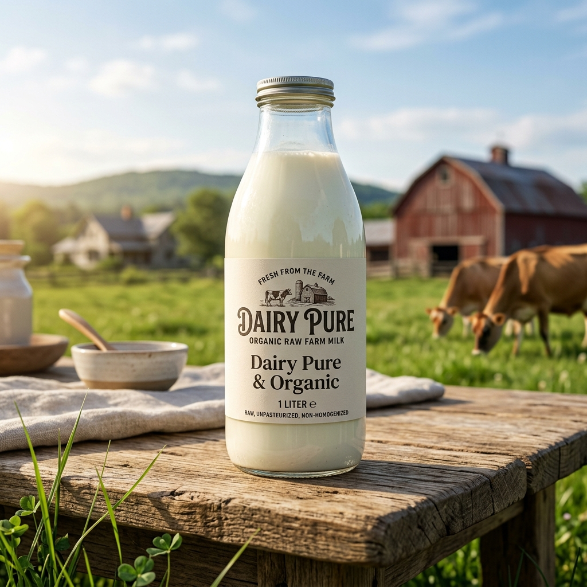

কাজীপাড়া মেট্রো স্টেশন সংলগ্ন আবাসিক ভবন ও অলিগলিতে প্রতিদিন ভোর ও বিকেলে সরাসরি নিজস্ব খামার থেকে ফ্রেশ কাঁচা দুধ পৌঁছে দিচ্ছে Dairy Pure & Organic।

ব্যস্ততম কাজীপাড়া এলাকায় খাঁটি ও কেমিক্যালমুক্ত তরল গরুর দুধ পাওয়া এখন আর কোনো ঝামেলার বিষয় নয়। Dairy Pure & Organic কাজীপাড়া অঞ্চলের সকল রেসিডেন্সিয়াল ফ্ল্যাট ও ভবনে নিয়মিত কোল্ড-চেইন ডেলিভারি ভ্যানের মাধ্যমে খাঁটি কাঁচা দুধ সরবরাহ করছে।
আমাদের দুধ কোনো কৃত্রিম পাউডার বা ক্ষতিকর ঘনকারক ছাড়াই সম্পূর্ণ প্রাকৃতিক। সরাসরি খামারের ঘাস খাওয়া গাভীর পুষ্টিকর দুধ যা শিশু ও বয়োবৃদ্ধদের প্রতিদিনের ভিটামিন, ক্যালসিয়াম ও প্রোটিনের ঘাটতি পূরণ করে।
উত্তর কাজীপাড়া • দক্ষিণ কাজীপাড়া • হাজী রোড
আমরা শুধু দুধ বিক্রি করি না, খামারের শতভাগ বিশুদ্ধতা ও আপনার পরিবারের সুস্থতার অঙ্গীকার বহন করি।
কোনো পানি, প্রিজারভেটিভ বা গুঁড়ো দুধের মিশ্রণ নেই। সরাসরি দোয়ানো প্রাকৃতিক তরল গরুর দুধ।
দিন-রাত ২৪/৭ সার্বক্ষণিক নিজস্ব ফার্মের গাভী থেকে টাটকা দুধ সংগ্রহ করে আপনার সুবিধাজনক সময়ে সরবরাহ করা হয়।
কাজীপাড়া এলাকার যেকোনো রোডে কোনো ডেলিভারি চার্জ ছাড়াই সরাসরি বাসার দরজায় দুধ পৌঁছে দেওয়া হয়।
কোনো ফি ছাড়াই আজীবন মেম্বারশিপ কার্ড এবং প্রতি লিটারে ৫ টাকা নিশ্চিত সাশ্রয় উপভোগ করুন।
ওয়েবসাইট, সরাসরি ফোন অথবা হোয়াটসঅ্যাপের মাধ্যমে ১ মিনিটেই দৈনিক বা নিয়মিত দুধের অর্ডার করুন।
ফুড-গ্রেড সিলগালা বোতল ও পরিষ্কার পাত্রে কোল্ড-চেইন বজায় রেখে শিশুদের জন্য নিরাপদ দুধ পৌঁছে দিই।
ঝামেলামুক্ত উপায়ে ২৪/৭ দিন-রাত যেকোনো সময়ে আপনার বাসায় তাজা দুধ পৌঁছে যাবে।
ওয়েবসাইট বা হোয়াটসঅ্যাপে আপনার নাম, ঠিকানা ও দুধের পরিমাণ জানিয়ে ১ মিনিটে অর্ডার কনফার্ম করুন।
গাভী দোয়ানোর পর ল্যাব টেস্ট ও স্বাস্থ্যসম্মত সিলগালা ফুড-গ্রেড বোতলে দুধ প্রস্তুত করা হয়।
নির্দিষ্ট সময়ে কোনো ডেলিভারি ফি ছাড়াই আমাদের ডেলিভারি টিম আপনার ফ্ল্যাটের দরজায় দুধ পৌঁছে দেবে।
কাজীপাড়া এলাকার জন্য নির্ধারিত সাশ্রয়ী অফিশিয়াল মূল্য তালিকা
প্রতিদিন সকাল ও বিকালের তাজা দোয়ানো পুষ্টিকর কাঁচা দুধ। কোনো পানি, কেমিক্যাল বা কৃত্রিম পাউডার মেশানো হয় না। শিশুদের মেধা ও পরিবারের হাড়ের সুরক্ষায় শতভাগ খাঁটি।
আমাদের নিয়মিত গ্রাহকরা আমাদের খাঁটি দুধ ও সার্ভিসের ব্যাপারে কী বলছেন দেখে নিন।
আপনার ঠিকানা এই এলাকার মধ্যে হলে সরাসরি কোনো ডেলিভারি চার্জ ছাড়াই অর্ডার করতে পারেন।
আমরা কাজীপাড়া ও আশপাশের সকল আবাসিক রোড, এভিনিউ ও অ্যাপার্টমেন্টে প্রতিদিন ভোর ও বিকেলে দুধ পৌঁছে দিয়ে থাকি।
আপনার নির্দিষ্ট ভবন বা গলিতে ডেলিভারি নিশ্চিত করতে এখনই আমাদের সাথে যোগাযোগ করুন।
ম্যাপে আপনার ঠিকানা পাঠানকাজীপাড়া এলাকায় দুধের অর্ডার ও ডেলিভারি সম্পর্কে গ্রাহকদের সচরাচর জিজ্ঞাসা
কাজীপাড়া এলাকায় আমাদের রয়েছে ডেলিভারি: ২৪/৭ সার্বক্ষণিক হোম ডেলিভারি সুবিধা। গ্রাহকের সুবিধার্থে দিন-রাত যেকোনো সময়ে সরাসরি বাসার ঠিকানায় তাজা ও খাঁটি দুধ পৌঁছে দেওয়া হয়।
কাজীপাড়া এলাকায় Dairy Pure & Organic-এর সকল সম্মানিত গ্রাহকের জন্য হোম ডেলিভারি সম্পূর্ণ ফ্রি।
আমাদের ওয়েবসাইটে 'অর্ডার করুন' বাটনে ক্লিক করে, সরাসরি আমাদের হটলাইনে (+880 1712-281861) কল করে অথবা হোয়াটসঅ্যাপে মেসেজ পাঠিয়ে ১ মিনিটেই অর্ডার করতে পারেন।
যেহেতু এটি ১০০% খাঁটি কাঁচা দুধ ও কোনো প্রিজারভেটিভ নেই, তাই ডেলিভারি পাওয়ার পর ফুটিয়ে ফ্রিজে রাখলে ২-৩ দিন এবং ডিপ ফ্রিজে রাখলে বেশ কিছুদিন সংরক্ষণ করা যায়।
অর্ডারের সময় আমাদের গোল্ড মেম্বারশিপের জন্য জানালে সম্পূর্ণ ফ্রিতে মেম্বারশিপ অ্যাকাউন্ট সক্রিয় হবে এবং প্রতি লিটারে ৫ টাকা নিশ্চিত ছাড় মিলবে।
কাজীপাড়া-এ Dairy Pure & Organic-এর খাঁটি দুধ হোম ডেলিভারি সার্ভিস ব্যবহার করতে আজই যোগাযোগ করুন। শতভাগ প্রাকৃতিক পুষ্টিতে গড়ে উঠুক সুস্থ আগামী।